Table of Contents
5. Consumer Choice and Utility
5.1. The Demand Curve and Utility
5.1.1. Defining Utility
5.1.2. Theory of Utility
5.1.3. Marginal Utility
5.1.4. Principle of Diminishing Marginal Utility
5.2. Theory of Consumer Choice
5.2.1. Introducing the Budget Constraint
5.2.2. Mapping Preferences with Indifference Curves
5.2.3. Properties of Indifference Curves
5.2.4. Impact of Income on Consumer Choices
5.2.5. Impact of Price on Consumer Choices
5.2.6. Deriving the Demand Curve
5.2.7. Applications of Principles on Consumer Choices
5. Consumer Choice and Utility
5.1. The Demand Curve and Utility
5.1.1. Defining Utility
Utility is an economic measure of how valuable, or useful, a good or service is to a consumer.
Learning Objective
Define Utility
Key Points
- Utility is measured by comparing multiple options.
- Utility can be positive and negative.
- Ordinal utility ranks a series of preferences without measuring how much more valuable one option is than another. Cardinal utility measures how much more preferable one option is in comparison to another.
- Ordinal utility is generally the preferred method of measuring utility.
Key Terms
- cardinal
- Describing a "natural" number used to indicate quantity (e.g., one, two, three), as opposed to an ordinal number indicating relative position.
- utility
- The ability of a commodity to satisfy needs or wants; the satisfaction experienced by the consumer of that commodity.
- ordinal
- Of a number, indicating position in a sequence.
Utility is a term used by economists to describe the measurement of "useful-ness" that a consumer obtains from any good or service. Utility may measure how much one enjoys a movie or the sense of security one gets from buying a deadbolt. The utility of any object or circumstance can be considered. Some examples include the utility from eating an apple, from living in a certain house, from voting for a specific candidate, or from having a given wireless phone plan. In fact, every decision that an individual makes in their daily life can be viewed as a comparison between the utility gained from pursuing one option or another .
Utility may be positive or negative with no effect on its interpretation. If one option gives $-15$ utility and another gives $-12$, selecting the second is not, as it might seem, the "lesser of two evils," but can only be interpreted as the better option.
Utility can be measured in one of two ways:
- Ordinal utility ranks a series of options in order of preference. This ranking does not show how much more valuable one option is than another, only that one option is preferable over another. An example of a statement reflecting ordinal utility is that "I would rather read than watch television. " Generally, ordinal utility is the preferred method for gauging utility.
- Cardinal utility also ranks a series of options in order of preference, but it also measures the magnitude of the utility differences. An example of a statement reflecting cardinal utility is "I would enjoy reading three times more than watching television. " Given how difficult it is to precisely measure preference, cardinal utility is rarely used.
5.1.2. Theory of Utility
The theory of utility states that, all else equal, a rational person will always choose the option that has the highest utility.
Learning Objective
Explain the Theory of Utility
Key Points
- The rationality assumption gives a basis for modeling human behavior and decision making.
- Utility includes every element of a decision.
- Rationality is dependent on a person's individual preferences. Therefore, what might be a rational decision for one person may not be a rational decision for another.
Key Term
- Rational individual
- A person who chooses the option that, all else equal, gives the greatest utility.
The theory of utility is based on the assumption of that individuals are rational. Rationality has a different meaning in economics than it does in common parlance. In economics, an individual is "rational" if that individual maximizes utility in their decisions. Whenever an individual is to choose between a group of options, they are rational if they choose the option that, all else equal, gives the greatest utility. Recalling that utility includes every element of a decision, this assumption is not particularly difficult to accept. If, when everything is taken into account, one decision provides the greatest utility, which is equivalent to meaning that it is the most preferred, then we would expect the individual to take that most preferred option. This should not necessarily be taken to mean that individuals who fail to quantify and measure every decision they make are behaving irrationally. Rather, this means that a rational individual is one who always selects that option that they prefer the most. When making an economically rational purchasing decision, a consumer must consider all of their personal preferences.
It is important to emphasize how rationality relates to a person's individual preferences. People prioritize different things. For example one person may prioritize flavor while another person may value making healthy choices more. As a result the first person may choose a sugary cereal while the second may choose granola. Based on their preferences, both made the economically rational choice.
The rationality assumption gives a basis for modeling human behavior and decision making. If we could not assume rationality, it would be impossible to say what, when presented with a set of choices, an individual would select. The notion of rationality is therefore central to any understanding of microeconomics.
5.1.3. Marginal Utility
Marginal utility of a good or service is the gain from an increase or loss from a decrease in the consumption of that good or service.
Learning Objective
Define Marginal Utility
Key Points
- Marginal utility is measured on a per unit basis.
- Since an individual's utility is rarely measured using cardinal means, calculating a product's marginal value for an individual may be difficult.
- Instead of trying to calculate a product's marginal value for an individual, economists assign dollar values to products based on their market price. This allows economists to estimate a product's marginal value based on all the consumer's preferences.
- The idea of marginal value is an important consideration when making production or purchasing decisions. A person should produce or purchase an additional item when the marginal utility exceeds the marginal cost.
Key Terms
- marginal
- Of, relating to, or located at or near a margin or edge; also figurative usages of location and margin (edge).
- cardinal
- Describing a "natural" number used to indicate quantity (e.g., one, two, three), as opposed to an ordinal number indicating relative position.
In economic terms, marginal utility of a good or service is the gain from an increase or loss from a decrease in the consumption of that good or service. The idea of marginal value is an important consideration when making production or purchasing decisions. A person should produce or purchase an additional item when the marginal utility exceeds the marginal cost. The marginal utility of owning a second house is likely less than the marginal utility of owning the first house.
Marginal utility is measured on a per unit basis. When evaluating the marginal utility of any item, it is important to know in what unit utility is measured. The unit is based on the type of activity that you are trying to measure. If you are a consumer of potato chips, you might measure utility based on whether to buy another bag or have another hand full with your lunch. If you are a producer of potato chips, your marginal value might be defined by a pallet of potato chips. In general, marginal value should be measured based on the smallest unit of consumption or production related to the product in question.
It is also important to remember that utility is difficult to quantify since preferences vary based on the individual. Utility is rarely measured in terms of magnitude; utility is normally just about determining which option is the best choice. Since utility is rarely measured using cardinal means, it may seem difficult to determine a product's marginal value. Economists get around this by substituting dollar values. While this may fail to capture a specific individual's preferences and utility, it offers a good approximation based on everyone's collective preferences as defined by the market.
5.1.4. Principle of Diminishing Marginal Utility
The principle of diminishing marginal utility states that as more of a good or service is consumed, the marginal benefit of the next unit decreases.
Learning Objective
Explain diminishing marginal utility
Key Points
- If you consume too much, the marginal utility of a good or service can become negative.
- In some circumstances, the marginal utility of producing or consuming an additional unit will increase for a short period of time. Generally there will be a "tipping point" at which marginal utility will then decrease.
- Generally these exceptions occur when what is being consumed is a component of a larger whole.
Key Terms
- utility
- The ability of a commodity to satisfy needs or wants; the satisfaction experienced by the consumer of that commodity.
- marginal benefit
- The extra benefit received from a small increase in the consumption of a good or service. It is calculated as the increase in total benefit divided by the increase in consumption.
The principle of diminishing marginal utility states that as an individual consumes more of a good, the marginal benefit of each additional unit of that good decreases.
The concept of diminishing marginal utility is easy to understand since there are numerous examples of it in everyday life. Imagine it is a hot summer day and you are hungry, so you get some ice cream. The first bite is great and so is the second. But with each spoonful, your hunger decreases and you become cooler. So while the last bite might still be good, it is probably not as satisfying as the first. This is a simple illustration of diminishing marginal utility .

As you can see in the chart, the more of a good you consume, the further its marginal utility decreases.
Negative Marginal Utility
While there are some circumstances where there will always be some marginal utility to producing or consuming more of a good, there are also circumstances where marginal utility can become negative. For example, while some antibiotics may be useful in curing diseases. However, if you take too much you can become sick or resistant to the drugs which could lead to future illnesses being incurable. So it is important to remember that "diminishing" does not necessarily mean to zero; you can have too much of a good thing.
Exceptions to the General Rule
This concept suggests a uniform steady decline of marginal utility, but that may not always be the case. There can be situations in which one might gain more utility from consuming a later unit of a good than from earlier consumption. If you are going on a date, for example, getting one ticket to a concert will have some utility but the second arguably has more because it enhances the value of the first.
Generally these exceptions occur when what is being consumed is a component of a larger whole. While utility may increase for a period, there is usually a "tipping point" where afterwards marginal utility decreases. Getting a third ticket for your date will have low marginal utility than the second.
5.2. Theory of Consumer Choice
5.2.1. Introducing the Budget Constraint
Budget constraints represent the plausible combinations of products and services a buyer can purchase with the available capital on hand.
Learning Objective
Discuss the role of the budget set and indifference curve in determining the choice that gives a consumer maximum satisfaction
Key Points
- Consumers analyze the optimal way in which to leverage their purchasing power to maximize their utility and minimize opportunity costs through employing trade-offs.
- The way economists demonstrate this arithmetically and visually is through generating budget curves and indifference curves.
- Budget curves indicate the relationship between two goods relative to opportunity costs, which defines the value of each good relative to one another.
- Indifference curves underline the way in which a given consumer interprets the value of each good relative to one another, demonstrating how much of 'good $x$' is equivalent in utility to a certain quantity of 'good $y$' (and vice versa).
- Through utilizing these economic tools, economists can predict consumer behavior and consumers can maximize their overall utility based upon their budget constraints.
Key Terms
- Trade-offs
- Any situation in which the quality or quantity of one thing must be decreased for another to be increased.
- utility
- The ability of a commodity to satisfy needs or wants; the satisfaction experienced by the consumer of that commodity.
Example
- Pretend you have \$100 to spend on food for the month. You have a wide variety of options, but some will provide you with higher opportunity costs than others. You could purchase enough bread, rice, milk and eggs to feed yourself for the full month or you could buy premium cut steak and store-prepared dinners by the pound (which would last about one week). The opportunity cost of the former is the high quality foods which have the convenience factor of already being prepared for you while the opportunity cost of the latter is having enough food to feed yourself for the entire month. In this circumstance the decision is easy, and the trade off will be sacrificing convenience and high quality food for the ability to have enough food on the table over the course of the whole month.
The concept of budget constraints in the field of economics revolves around the idea that a given consumer is limited in consumption relative to the amount of capital they possess. As a result, consumers analyze the optimal way in which to leverage their purchasing power to maximize their utility and minimize opportunity costs. This is achieved through using budget constraints, which represent the plausible combinations of products and/or services a buyer is capable of purchasing with their capital on hand.
Trade-offs
To expand upon this definition further, the business concept of opportunity cost via trade-offs is a central building block in understanding budget constraints. An opportunity cost is defined as the foregone value of the next best alternative in a given action. To apply this to a real-life situation, pretend you have \$100 to spend on food for the month. You have a wide variety of options, but some will provide you with higher opportunity costs than others. You could purchase enough bread, rice, milk and eggs to feed yourself for the full month or you could buy premium cut steak and store-prepared dinners by the pound (which would last about one week). The opportunity cost of the former is the high quality foods which have the convenience factor of already being prepared for you while the opportunity cost of the latter is having enough food to feed yourself for the entire month. In this circumstance the decision is easy, and the trade off will be sacrificing convenience and high quality food for the ability to have enough food on the table over the course of the whole month.
Budget Curves and Indifference Curves
Understanding these trade-offs underlines the true function of budget constraints in economics, which is identifying which consumer behaviors will maximize utility. Consumers are inherently equipped with an infinite demand and a finite pool of resources, and therefore must make budgetary decisions based on their preferences. The way economists demonstrate this arithmetically and visually is through generating budget curves and indifference curves.
Budget curves: This indicates the relationship between two goods relative to opportunity costs, which defines the value of each good relative to one another. For example, on the figure provided a quantity of 5 for 'good $y$' is identical in price (economic value) as a quantity of 7 for 'good $x$'. This demonstrates the trade-off ratio between the two available products or services. It is important to keep in mind that prices and valuations of goods are constantly changing, and that the ratio between any two goods is not fixed over the long-term for most products/services.
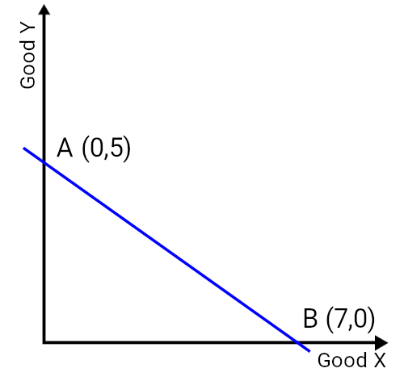{kind=link}
A budget curve demonstrates the relationship between two goods relative to opportunity costs, essentially deriving the relative value of each good based on quantity and utility. Keep in mind that moving from one point on the in to another is trading off '$x$' amount of one good for '$y$' amount of another.
Indifference curves: Indifference curves underline the way in which a given consumer interprets the value of each good relative to one another, demonstrating how much of 'good $x$' is equivalent in utility to a certain quantity of 'good $y$' (and vice versa). Any point along the indifference curve will represent indifference to the consumer, or simply put equivalent preference for one combination of goods or the other. In the figure it is clear that the budget curve has been included in conjunction with the indifference curves, which allows insight as to the ideal actual quantity of each good is optimal for this specific consumer.
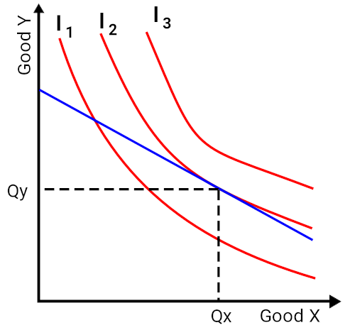{kind=link}
Indifference curves are designed to represent an equal perception of overall value in a given basket of goods relative to a specific consumer. That is to say that each point along the curve is considered by the consumer of equivalent value despite alterations in the quantity of each good, as these trade-offs are consider of equal value and thus indifferent.
Through utilizing these economic tools, economists can predict consumer behavior and consumers can maximize their overall utility based upon their budget constraints.
5.2.2. Mapping Preferences with Indifference Curves
Economists mapping consumer preferences use indifference curves to illustrate a series of goods that represent equivalent utility.
Learning Objective
Describe the indifference curves for goods that are perfect substitutes and complements
Key Points
- Indifference curves illustrate bundles of goods that provide the same utility.
- An economist can derive conclusions based upon the properties of the illustration. In framing these implications it is useful to identify the two potential extremes of substitute goods and complementary goods.
- The comparison between the goods demonstrates the relative utility one has compared to another, and the way in which consumers will act when posed with a decision between various products and services.
- The comparison between the goods demonstrates the relative utility one has compared to another, and the way in which consumers will act when posed with a decision between various products and services.
Key Terms
- substitute
- A good with a positive cross elasticity of demand, meaning the good's demand is increased when the price of another is increased.
- Complement
- A good with a negative cross elasticity of demand, meaning the good's demand is increased when the price of another good is decreased.
A critical input to understanding consumer purchasing behaviors and the general demand present in a given market or economy for specific goods and services is the identification of consumer preferences. Consumer preference varies substantially from individual to individual and market to market, requiring comprehensive economic observation of consumer choices and behaviors. One of the primary tools leveraged by economists mapping consumer preferences is the indifference curve, which illustrates a series of bundled goods in which a consumer is indifferent. A consumer would be just as happy with any combination of Good X and Good Y on the curve . This could synonymous to saying baskets of goods that provide the same utility.
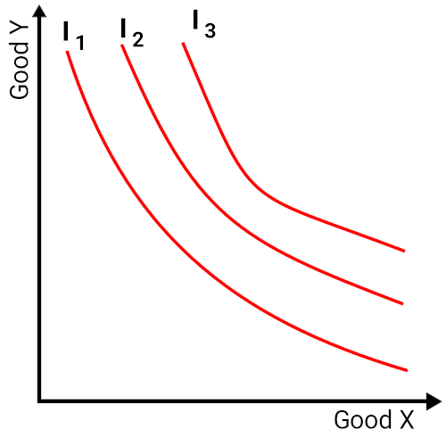{kind=link}
A consumer will be just as happy with any combination of Good X and Y on indifference curve I1, though s/he will prefer any bundle on indifference curve I2 or I3.
These indifference curves, when mapped graphically alongside other curves, is called an indifference map. A key consideration in creating any indifference map is what relative preferences should be isolated. While it is possible to create a complex array of preference maps to compare more than two products/services, each specific standard indifference map will be about creating a benchmark between two. For example one could compare relatively similar goods/services (i.e. apples vs. oranges) or dramatically different goods/services (i.e. university training vs. automobile purchasing). These two items being compared represent the x and y axis of a indifference map. A consumer will always prefer to be on the indifference curve farthest from the origin.
Implications of Indifference Maps
After constructing the required inputs to generate a comprehensive indifference map, an economist can derive conclusions based upon the properties of the illustration. In framing these implications it is useful to identify the two potential extremes that can be outlined via with indifference curves:
- Perfect Substitutes: To understand what a indifference curves will look like when products are perfect substitutes, please see . These lines are essentially perfectly straight, and that demonstrates that the relative utility of 'Good X' compared to that of 'Good Y' is equivalent regardless of the amount in question. It is reasonable to assume in this scenario that purchasing all of one or all of the other will not decrease the overall satisfaction of the consumer. Perfect substitutes are often homogeneous goods. A consumer with no preference between Burger King and McDonald's, for example, might consider them perfect substitutes and be indifferent to spending all of their fast food money on one or the other.
- Perfect Complements: The opposite of a perfect substitute is a perfect complement (see ), which is illustrated graphically through curves with perfect right angles at the center. These right angles, and the subsequent straight horizontal and vertical lines, demonstrate that 'Good X' and 'Good Y' are inherently tied to one another and that the consumption of one is dependent upon the consumption of the other. An example of complementary goods might be university tuition and academic textbook purchases, an automobile and automobile insurance, or a cable and a television.
Combining an understanding of these inputs with the extremes demonstrated an indifference map, economists are able to draw meaningful conclusions regarding consumer choices and purchasing behaviors in the context of two goods. The comparison between the goods demonstrates the relative utility one has compared to another, and the way in which consumers will act when posed with a decision between various products and services.
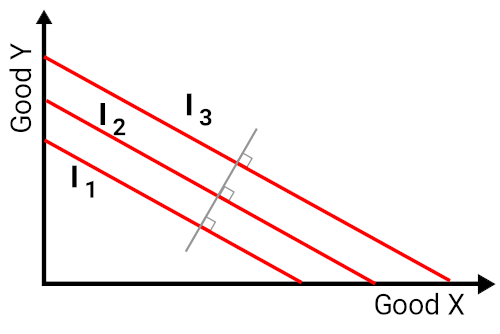{kind=link}
In this particular series of indifference curves it is clear that 'Good X' and 'Good Y' are perfect substitutes for one another. That is to say that the utility of one is identical to the utility of the other across all quantities represented on the map.
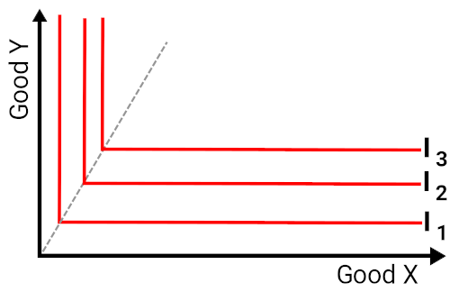{kind=link}
The perfect right angle in this series of indifference curves implies that the utility of 'Good X' and 'Good Y' are entirely interdependent. This is to say that in order to enjoy one good it is necessary to also have the other.
5.2.3. Properties of Indifference Curves
Almost all indifference curves will be negatively sloped, convex, and will not intersect.
Learning Objective
Analyze the properties that are common to many indifference curves
Key Points
- The concept of an indifference curve is predicated on the idea that a given consumer has rational preferences in regard to the purchase of groupings of goods, with a series of key properties that define the process of mapping these curves.
- Indifference curves only reside in the non-negative quadrant of a two-dimensional graphical illustration (or the upper right).
- Indifference curves are always negatively sloped. Essentially this assumes that the marginal rate of substitution is always positive.
- All curves projected on the indifference map must not intersect in order to ensure transitivity.
- Nearly all indifference lines will be convex, or curving inwards at the center (towards the bottom left).
Key Terms
- Transitive
- Having the property that if an element $x$ is related to $y$ and $y$ is related to $z$, then $x$ is necessarily related to $z$.
- utility
- The ability of a commodity to satisfy needs or wants; the satisfaction experienced by the consumer of that commodity.
Indifference curves trace the combination of goods that would give a consumer a certain level of utility. The indifference curve itself represents a series of combinations of quantities of goods (generally two) that a consumer would be indifferent between, or would value each of them equally in regards to overall utility. Indifference curves allow economists to predict consumer purchasing behaviors based upon utility maximization for a bundle of goods within the context of a given consumer's budget constraints and preferences.
Properties of Indifference Curves
The concept of an indifference curve is predicated on the idea that a given consumer has rational preferences in regard to the purchase of groupings of goods, with a series of key properties that define the process of mapping these curves:
- Indifference curves only reside in the non-negative quadrant of a two-dimensional graphical illustration (or the upper right). This assumes that negative quantities are meaningless - one can't consume a negative amount of a good.
- Indifference curves are always negatively sloped. This is based on the assumption that a consumer is always better off consuming more of a good, so as quantity consumed of one good increases, total satisfaction would increase if not offset by a decrease in the quantity consumed of another good. This also assumes that the marginal rate of substitution is always positive.
- All curves projected on the indifference map must also be transitive to ensure that if $A$ is preferred to $B$ and $B$ is preferred to $C$, $C$ is not also preferred to $A$. This is manifested in indifference curves that never intersect.Â
- Nearly all indifference lines will be convex, or curving inwards at the center (towards the bottom left). This demonstrates that increasingly high quantities of one good over another have a cost in respect to their overall utility per unit (diminishing returns). It is technically possible for indifference curves to be perfectly straight as well, which would imply that the two goods are identical (perfect substitutes).
Combining these various properties, one can highlight a number of critical implications of consumer purchasing behavior and the concept of utility. Consumers naturally desire a bundle of goods that is varied (hence the convex curves for most comparisons) in order to maximize their utility. Similarly, all indifference curves will naturally identify diminishing rates of substitution as the quantity increases for a certain good compared to another, and can create demand projections of prospective supply.
5.2.4. Impact of Income on Consumer Choices
One of the central considerations for a consumer's consumption choice is income or wage levels, and thus their budgetary constraints.
Learning Objective
Break down changes in consumption into the income effect and the wealth effect
Key Points
- The basic premise behind the income effect is that varying income levels will determine different quantities and balanced baskets along the provided indifference curves for any two goods being compared.
- These differences in quantity reflect the increase or decrease an a given individual's purchasing power, thus the income effect could be summarized as the increase in relative utility captured by a consumer with more monetary power.
- Income effects on consumer choice grow more complex as the type of good changes, as different product and services demonstrate different properties relative to both other products/services and a consumers preferences and utility.
- The four key types of goods to consider are normal goods, inferior goods, complements and substitutes.
Key Terms
- Inferior goods
- A good that decreases in demand when consumer income rises; having a negative income elasticity of demand.
- Income Effect
- The change in consumption choices due to changes in the amount of money available for an individual to spend.
- Wealth Effect
- The change in an individual's consumption choices due to changes in perception of how rich s/he is.
Consumer choices are predicated on various economic circumstances, and recognizing the relationship between these circumstances and an individual's purchasing behavior allows economists to recognize and predict consumer choice trends. One of the central considerations for a consumer in deciding upon their purchasing behaviors is their overall income or wage levels, and thus their budgetary constraints. These budgetary constraints, when applied to a series of products and services, can be optimized to capture the most utility for the consumer based on their purchasing power.
Income from a Consumer Theory Perspective
The simplest way to demonstrate the effects of income on overall consumer choice, from the viewpoint of Consumer Theory, is via an income-consumption curve for a normal good(see ). The basic premise behind this curve is that the varying income levels (as illustrated by the green income line curving upwards) will determine different quantities and balanced baskets along the provided indifference curves for the two goods being compared in this graph. These differences in quantity reflect the increase or decrease an a given individual's purchasing power, thus the income effect could be summarized as the increase in relative utility captured by a consumer with more monetary power.
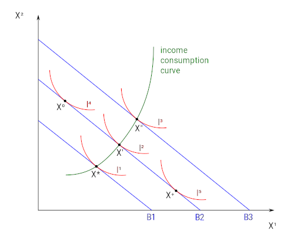{kind=link}
Simply put, increases or decreases in income will alter the optimal quantity (and thus relative utility) of a given basket of goods for a specific consumer.
The wealth effect differs slightly from the income effect. The wealth effect reflects changes in consumer choice based on perceived wealth, not actual income. For example, if a person owns a stock that appreciates in price, they perceive that they are wealthier and may spend more, even though they have not realized those gains so their income has not increased.
Effects of Income on Different Goods
Income effects on consumer choice grow more complex as the type of good changes, as different product and services demonstrate different properties relative to both other products/services and a consumers preferences and utility. As a result, it is useful to outline the differences in income effects on normal, inferior, complementary and substitute goods:
- Normal:A normal good is a good with incremental increases or decreases in utility as quantity changes, demonstrating a predictable and simple linear relationship as income increases or decreases. demonstrates a graphical representation of the effects of income changes upon preference map.
- Inferior:Inferior goods, or goods that are less preferable, will demonstrate inverse relationships with income compared to normal goods. That is to say that an increase in income will not necessarily result in an increase in quantity for the inferior good, as the consumer derives minimal utility in purchasing the inferior good compared to other goods. Inferior goods are often sacrificed as income rises and consumers gain more choice/options. This can be represented in .
- Complementary: Complementary goods are goods that are interdependent in consumption, or essentially goods that require simultaneous consumption by the consumer. An example of this would be like purchasing an automobile and car insurance, the consumption of one requires the consumption of the other. As income increases, these will increase relative to one another (as a ratio). demonstrates this concept in graphical form.
- Substitutes: Perfect substitutes are essentially interchangeable goods, where the consumption of one compared to another has no meaningful impact on the consumer's utility derived. Substitutes are goods that a consumer cannot differentiate between in terms of the need being filled and the satisfaction obtained. Income increases will thus affect the consumption of these goods interchangeably, resulting in increase in the quantity of either or both.
In merging Consumer Theory and consumer choices with income level, the primary takeaway is that an increase in income will increase the prospective utility that consumer can acquire in the market. Understanding how this applies in a general fashion, alongside the specific circumstances dictating specific types of goods, it becomes fairly straight-forward to predict consumer purchasing behaviors at differing income levels.

This graph demonstrates the inverse relationship between income and the consumption of inferior goods. As income rises, the quantity consumed of 'X1' decreases. This illustrates increased variance in consumer choice as income rises.
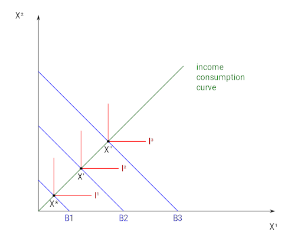{kind=link}
In this graphical depiction of income increases, the consumption of these two goods are complementary and thus interdependent.
5.2.5. Impact of Price on Consumer Choices
The demand curve shows how consumer choices respond to changes in price.
Learning Objective
Construct the demand curve using changes in consumption due to price changes
Key Points
- For normal goods or services, demand is illustrated with a downward sloping curve, where the quantity on the x-axis will generally increase as the price on the y-axis decreases (and vice versa).
- As the demand curve implies, price is the central driving force behind a decision to purchase a given product or service.
- A critical consideration of product/service pricing is the price elasticity of a given good, which indicates how responsive demand is to a change in price.
- Using demand curves, economists can project the impact of a price change on the consumer choices in a given market.
- The quantity demanded may change in response to both to shifts in demand (and the creation of a new demand curve, as demonstrated in and movements along the established demand curve.
Key Term
- elasticity
- The sensitivity of changes in a quantity with respect to changes in another quantity.
In almost all cases, consumer choices are driven by prices. As price goes up, the quantity that consumers demand goes down. This correlation between the price of goods and the willingness to make purchases is represented clearly by the generation of a demand curve (with price as the y-axis and quantity as the x-axis). The construction of demand, which shows exactly how much of a good consumers will purchase at a given price, is defining of consumer choice theory.
Deriving Overall Demand
The generation of a demand curve is done by calculating what price consumers are willing to pay for a given quantity of a good or service. For normal goods or services, demand is illustrated with a downward sloping curve, where the quantity on the x-axis will generally increase as the price on the y-axis decreases (and vice versa). The quantity demanded may change in response to both to shifts in demand (and the creation of a new demand curve, as demonstrated in ) and movements along the established demand curve. A demand shift usually takes place when an external factor increases or decreases demand across the board, while a movement upwards or downwards on the curve is indicative of a change in the good's price.
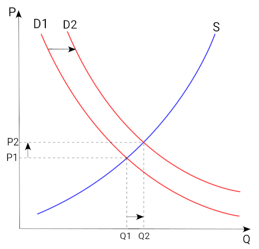{kind=link}
This graph demonstrates a shift in overall demand in the market, where the generation of a new parallel demand curve is required to accurately represent consumer choices.
As the demand curve implies, price is often the central driving force behind a decision to purchase a given product or service. Consumers must weigh the overall utility they can capture by making a purchase and benchmark that against their overall monetary resources to optimize their purchasing decisions. This practice regulates the price companies can set for their products and services, as the income effects and the prospective substitutions (substitution effect) will drive consumer purchase towards purchases that create the most value for themselves.
Price Elasticity
A critical consideration of product/service pricing is the price elasticity of a given good, which indicates how responsive demand is to a change in price. Price elasticity is essentially a measurement of how much any deviations in price will drive the overall quantity purchased up or down, underlining to what extent consumer purchasing decisions will be dictated by pricing. The figure pertaining to price elasticity shows how the slope of the demand curve will change depending on the degree of price sensitivity in the marketplace for a good. A highly elastic good will see consumers much less likely to purchase when prices are high and much more likely to purchase when prices are low, while a good with low elasticity will see consumers purchasing the same quantity regardless of small price changes.
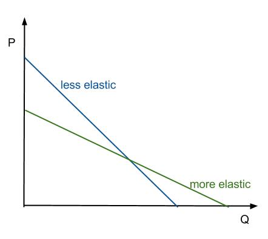{kind=link}
As this graph demonstrates, the slope of the demand curve will vary as a direct result of how elastic consumer purchasing behaviors will be compared to price changes.
Using demand curves, economists can project the impact of a price change on the consumer choices in a given market.
5.2.6. Deriving the Demand Curve
The law of demand pursues the derivation of a demand curve for a given product that benchmarks the relative prices and quantities desired.
Learning Objective
Explain how Giffen goods violate the law of demand
Key Points
- The derivation of demand is a useful tool in this pursuit, often combined with a supply curve in order to determine equilibrium prices and understand the relationship between consumer needs and what is readily available in the market.
- The inherent relationship between the price of a good and the relative amount of that good consumers will demand is the fulcrum of recognizing demand curves in the broader context of consumer choice and purchasing behavior.
- Generally speaking, normal goods will demonstrate a higher demand as a result of lower prices and vice versa.
- Giffen goods are a situation where the income effect supersedes the substitution effect, creating an increase in demand despite a rise in price.
- Neutral goods, unlike Giffen goods, demonstrate complete ambivalence to price. That is to say that consumer swill pay any price to get a fixed quantity.
Key Terms
- Derivation
- The operation of deducing one function from another according to some fixed law, called the law of derivation, as the of differentiation or of integration.
- Giffen good
- A good which people consume more of as only the price rises; Having a positive price elasticity of demand.
The law of demand in economics pertains to the derivation and recognition of a consumer's relative desire for a product or service coupled with a willingness and ability to pay for or purchase that good. Consumer purchasing behavior is a complicated process weighing varying products/services against a constantly evolving economic backdrop. The derivation of demand is a useful tool in this pursuit, often combined with a supply curve in order to determine equilibrium prices and understand the relationship between consumer needs and what is readily available in the market.
Deriving Demand Curves
Despite a wide array of prospective goods and services in a constantly altering economic environment, the law of demand pursues the derivation of a demand curve for a given product that benchmarks the relative prices and quantities desired by consumers in a given marketplace. The inherent relationship between the price of a good and the relative amount of that good consumers will demand is the fulcrum of recognizing demand curves in the broader context of consumer choice and purchasing behavior.
Generally speaking, normal goods will demonstrate a higher demand as a result of lower prices and vice versa. The derivation of demand curves for normal goods is therefore relatively predictable in respect to the direction of the slope on a graph (see ). The downward slope represented in this figure underline the critical principle that a given price point will reflect a given quantity demanded by a given marketplace, allowing suppliers and economists to measure the value of a product/service based on a price/quantity analysis of consumer purchasing behaviors.
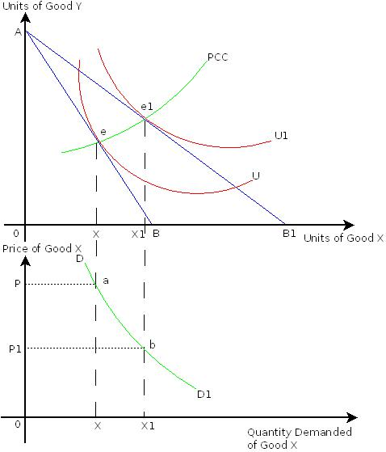{kind=link}
This illustration demonstrates the way in which economists can identify a series of prices and quantities for goods demanded, which ultimately represents the overall demand curve for a given product/service.
One important consideration in demand curve derivation is the differentiation between demand curve shifts and movement along the curve itself. Movement along the curve itself is the identification of what quantity will be purchased at different price points. This means that the factors that underlie consumer desire for the product remains constant and consistent, but the quantity or price alters to a new point along the established curve. Alternatively, sometimes external factors can shift the actual demand for a given good, pushing the demand curve outwards to the right and up or inwards down and left. This represents a substantial change in the actual demand for that product, as opposed to a quantity or price shift at a fixed demand level.
Exceptions: Giffen Goods and Neutral Goods
With the concept of general demand curves in mind, it is important to recognize that some goods do not conform to the traditional assumption that higher prices will always demonstrate lower demand. Giffen goods and neutral goods break this rule, with the former demonstrating an increase in demand as a result of a price rise (see ) and the latter demonstrating indifference to price in regards to the quantity demanded (illustrated as a completely vertical demand curve):
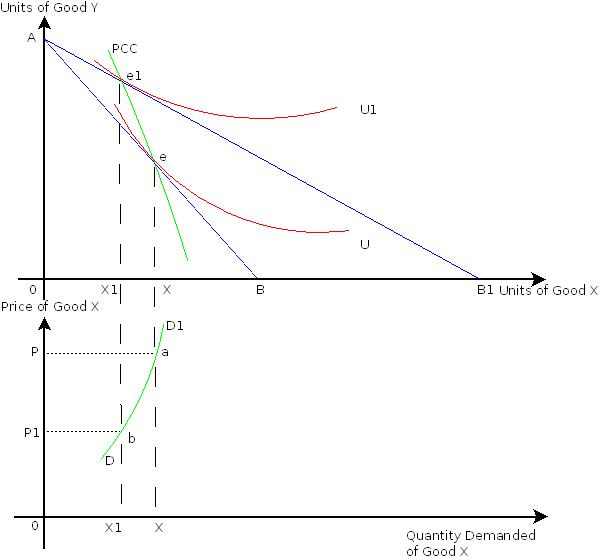{kind=link}
Giffen goods are essentially goods that demonstrate an increase in demand as a result of an increase in price, generally considered counter-intuitive in traditional economic models. This graph illustrates the derivation of a demand curve for these goods.
- Giffen Goods - Giffen goods are a situation where the income effect supersedes the substitution effect, creating an increase in demand despite a rise in price. Goods such as high-end luxury items like expensive fashion often demonstrate this type of counter-intuitive trend, where the high price of an item is attractive to the consumer for the sake of displaying wealth.
- Neutral Goods - Neutral goods, unlike Giffen goods, demonstrate complete ambivalence to price. That is to say that consumers will pay any price to get a fixed quantity. These goods are often necessities, defying the standard law of demand due to the fact that they must be purchased regardless of price/situation. A good example of this is water or healthcare, where not getting what is required will have dramatic consequences.
5.2.7. Applications of Principles on Consumer Choices
The income effect and substitution effect combine to create a labor supply curve to represent the consumer trade-off of leisure and work.
Learning Objective
Explain the labor-leisure tradeoff in terms of income and substitution effects
Key Points
- Economics assumes a population of rational consumers, subjected to the complexities of modern economics while they attempt to maximize the utility obtainable within their income range.
- The income effect says that a consumers overall income level will have an effect on the quantities of goods that consumer will purchase.
- The substitution effect, similar to the income effect, identifies ways in which consumer purchasing power will alter the relative quantities of goods/services purchased by consumers at varying income levels and budgetary constraints.
- Combining the substitution effect and the income effect, one can derive an overall labor-leisure trade-off based on a given consumers purchasing power (income) relative to the price of necessary bundles of goods (substitution effect).
- A rational consumer will begin to work less hours after meeting their consumption requirements in order to capture the value of leisure (and enjoy their income in a meaningful way).
Key Terms
- substitution effect
- The change in demand for one good that is due to the relative prices and availability of substitute goods.
- purchasing power
- The amount of goods and services that can be bought with a unit of currency or by consumers.
- Income Effect
- The change in consumption resulting from a change in real income.
Economics assumes a population of rational consumers, subjected to the complexities of modern economics while they attempt to maximize the utility obtainable within their income range. Central principles to analyzing consumer actions and choices are income effect and the substitution effect, which ultimately generate a labor supply to illustrate the labor-leisure trade-off for consumers.
Income Effect
The income effect needs two simple inputs: the average price of goods and the consumer's income level. This creates a relative buying power, which will play a substantial role in the quantity of goods purchased. Predicting consumer choice requires inputs on consumer purchasing power and the goods in which they are deciding between. In we are comparing 'Good X' and 'Good Y' to identify how a change in income will alter the overall amount of each good would likely be purchased along a series of indifference curves (see Boundless atom on 'Indifference Curves'). This graphical representation of a consumer's income (I) and budget constraints (BC) underlines the variance in quantity of 'Good X' and 'Good Y' that will be demanded dependent upon income circumstance. Naturally, a higher income will result in a shift towards increase in quantity for many consumable goods/services.
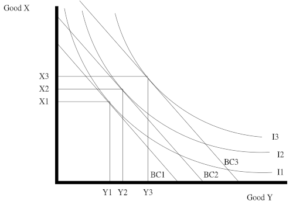{kind=link}
This graphical representation of a consumers income(I) and budget constraints (BC) underlines the variance in quantity of 'Good X' and 'Good Y' that will be demanded dependent upon income circumstance. Naturally, a higher income will result in a shift towards increase in quantity for many consumable goods/services.
Substitution Effect
The substitution effect is closely related to that of the income effect, where the price of goods and a consumers income will play a role in the decision-making process. In the substitution effect, a lower purchasing power will generally result in a shift towards more affordable goods (substituting cheaper in place of more expensive goods) while a higher purchasing power often results in substituting more expensive goods for cheaper ones. This shows the relationship between two graphs, pointing out how the substitution effect identifies the relationship between the price of a given good and the quantity purchased by a given consumer. As the bottom half of the figure implies, a higher price will dictate a lower quantity consumer for 'Good Y', while a lower price will create a higher quantity. This translates to the graph above as the consumer makes choices to maximize utility when comparing the price of different goods to a given income level, substituting cheaper goods and more expensive goods dependent upon purchasing power.
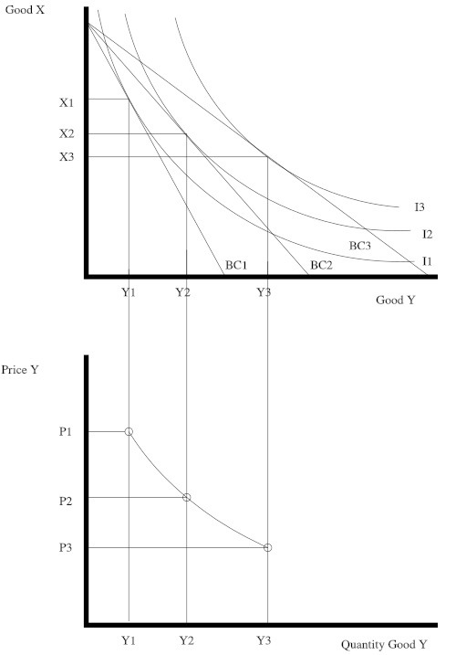{kind=link}
This two-part graphical representation of the substitution effect identifies the relationship between the price of a given good and the quantity purchased by a given consumer. As the bottom half effectively highlights, a higher price will dictate a lower quantity consumer for 'Good Y', while a lower price will create a higher quantity. This translates to the graph above as the consumer makes choices to maximize utility when comparing the price of different goods to a given income level.
Types of Goods
One additional important component of consumer choice is the way in which different goods demonstrate different reactions to income alterations and price changes:
- Income Changes: When income changes rises or falls, consumption of certain types of goods will have a positive or negative correlation with these changes. With normal goods, an increase of income will correlate with a higher quantity of consumption while a decrease in income will see a decrease in consumption. Inferior goods, on the other hand, will demonstrate an inverse relationship. A rise in income will cause a decrease in their consumption and vice versa.
- Price Changes: When price rises or falls, consumption of certain types of good will either demonstrate positive or negative correlations to these shifts in regard to quantity consumed. Ordinary goods will demonstrate the intuitive situation, where a rise in price will result in a decrease in quantity consumer. Inversely, Giffen goods demonstrate a positive relationship, where the price rises will result in higher demand for the good and high consumption.
Labor Supply Curve
These concepts of income versus required monetary inputs (prices) for goods/services generates a relationship between how much an individual will choose to work and how much an individual can take in terms of leisure time. Simply put, desired labor and leisure time are dependent upon income and prices for goods. The relationship between the number of hours worked and the overall wage levels results in something of a boomerang effect, with hours worked as the x-axis and wages as the y-axis.
Graphically represented, the labor supply curve looks like a backwards-bending curve , where an increase in wages from W1 to W2 will result in more hours being worked and an increase from W2 to W3 will result in less. This is primarily due to the fact that there is a certain amount of capital attained by consumers where they will be satisfied with their monetary utility, at which point working more has diminishing returns on their satisfaction. A rational consumer will begin to work less hours after meeting their consumption requirements in order to capture the value of leisure (and enjoy their income in a meaningful way).
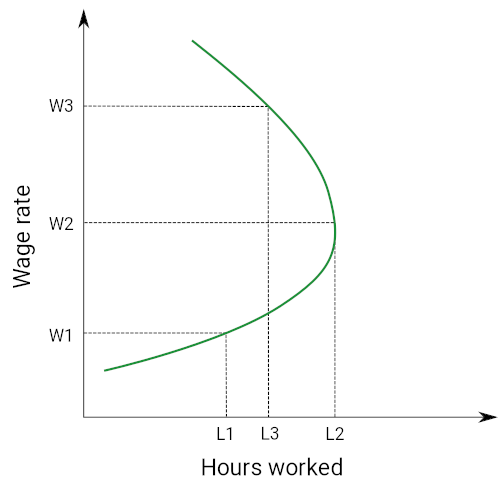{kind=link}
The concept of labor supply economics is most efficiently communicated via the following graphical representation. This graph demonstrates the relationship between hours work and overall wage rates, demonstrating the shift in utility as wages increase.
To apply this to the concept of different types of goods above, one can view wage rates and leisure time as consumer goods. Depending on which point on the backwards-bending curve we are on, the trade-offs and thus the consumer decision will change. If a worker choose to work more when the wage rate rises, leisure is an ordinary good.